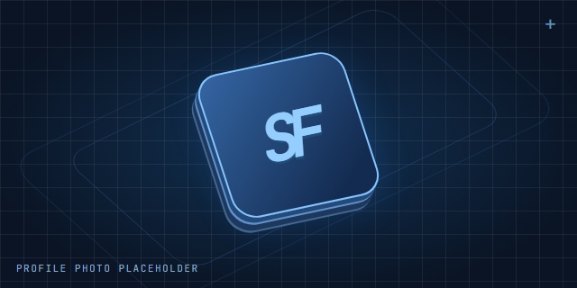

Available for opportunities
Hi, I'm
Sean Fuertes.
Aspiring Software Developer
I'm an Information Technology student passionate about building web applications, solving real-world problems, and exploring cybersecurity. I enjoy learning new technologies and developing systems that are both functional and secure.
sean@portfolio:~$ whoami
Aspiring Software Developer
sean@portfolio:~$ interests
Web Development
Cybersecurity
Backend Development
Database Management
sean@portfolio:~$ status
Available for Opportunities
About me
Beyond the Code.
I'm a Bachelor of Science in Information Technology student who enjoys exploring how technology works. My main interests are software development, web applications, database systems, and cybersecurity.
Through academic and client-based projects, I've gained hands-on experience creating applications, integrating APIs, managing databases, and solving technical problems.
I'm continuously improving my programming skills while exploring cybersecurity concepts such as networking, system security, and ethical hacking.

Skills
My Technical Toolkit.
Featured projects
Selected Works.
Experience & education
My Journey.
- Education
Bachelor of Science in Information Technology
FAITH CollegesStudying software development, databases, networking, and other IT fundamentals.
- Client project
Client-Based Software Development
BM's Catering ServicesDeveloped and designed features for a catering reservation and management system. Worked on project requirements, database structure, and application functionality.
- Coursework
Academic Software Development Projects
Built web applications and practiced backend development, API integration, and database management.
- Independent learning
Cybersecurity Exploration
Learning networking concepts, Linux fundamentals, and cybersecurity practices. Interested in ethical hacking, secure software development, and defensive security.
Cybersecurity
Security Is Part of the Process.
I'm exploring how to protect the applications I build, from the network they run on to the code that handles user input.
$ list learning-topics
- Network Security
- Linux Fundamentals
- Secure Coding
- Vulnerability Assessment Concepts
- Ethical Hacking
- Cyber Defense
Contact
Let's Build Something Together.
I'm always open to learning opportunities, internships, collaborations, and conversations about software development and cybersecurity.